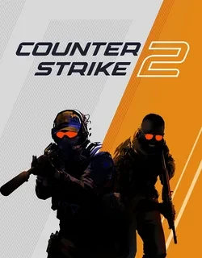
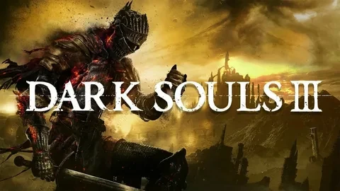
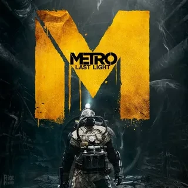
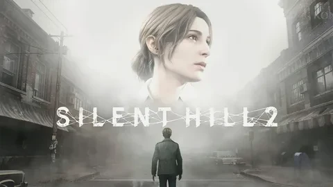
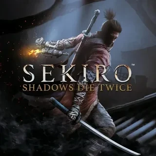

Денис
🎮 ИгрыПривет! Я Денис, учусь на первом курсе. В игры играю с детства, люблю как динамичные шутеры, так и атмосферные сюжетные проекты. Сейчас изучаю геймдизайн и мечтаю создавать собственные инди-игры.
Кроме игр, увлекаюсь программированием и веду канал в Telegram об игровой индустрии.

Counter Strike 2
Легендарный тактический шутер, который не теряет актуальности. Новый движок, улучшенная физика и та же любимая механика. Идеально для игры с друзьями.

Dark Souls 3
Хардкорная RPG, которая проверяет терпение и навыки. Сложные боссы, мрачная атмосфера и чувство победы, которое не сравнить ни с чем.

Metro 2033 Last Light
Атмосферный постапокалиптический шутер по мотивам книг Дмитрия Глуховского. Погружение в метро, мурашки по коже и отличный сюжет.

Silent Hill 2 Remake
Ремейк культового психологического хоррора. Пугающая атмосфера, глубокий сюжет и один из лучших игровых сценариев в истории.

Sekiro: Shadows Die Twice
Самурайский экшен от создателей Dark Souls. Быстрые бои, парные мечи, грапплинг-крюк и невероятная сложность. Игра года 2019.